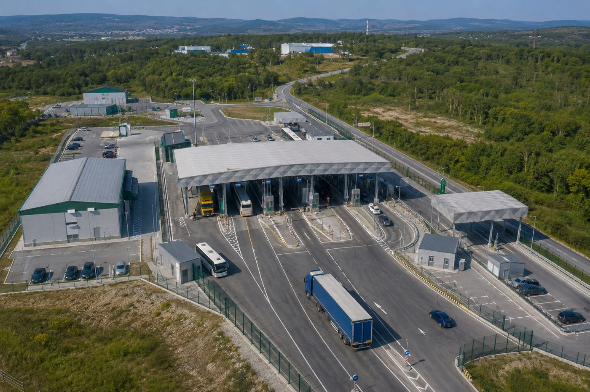

27 августа 2026 года Правительство России распоряжением № 2309-р разрешило открыть автомобильный грузопассажирский пункт пропуска «Краскино» в Приморском крае. Для маршрута Хуньчунь — юг Приморья это важное инфраструктурное событие: обновлённый переход уже может принимать транспорт, хотя весь комплекс реконструкции ещё не выведен на проектную конфигурацию.
Здесь важно не смешивать две даты. Август 2026 года — это запуск движения по временной схеме. Проектная мощность в 750 транспортных средств в сутки относится к следующему этапу и должна быть достигнута после завершения всего комплекса работ в I квартале 2027 года. Поэтому сегодня правильнее говорить не о «полностью готовом Краскино», а о переходе, который уже работает и постепенно выходит на рассчитанные параметры.
Главное для перевозчиков: Краскино добавляет ещё один модернизированный автомобильный маршрут между Китаем и Приморьем. Это увеличивает инфраструктурный резерв на границе, но само по себе не гарантирует сокращения срока доставки конкретного автомобиля.
Что уже изменилось после открытия по временной схеме
К моменту запуска на объекте были готовы основные здания и сооружения, необходимые для работы государственных контрольных служб. Одновременно продолжился монтаж и наладка части оборудования, включая портальные инспекционно-досмотровые комплексы, объединённые с весогабаритным контролем.
Пункт уже функционирует, но официальная фактическая пропускная способность временной схемы отдельно не опубликована. Поэтому сравнивать сегодняшний поток с будущими 750 машинами в сутки пока некорректно.
- Распоряжение об открытии подписано 27 августа 2026 года. Пункт получил возможность работать до полного завершения реконструкции.
- Движение организовано по временной схеме. Часть новой инфраструктуры используется уже сейчас, часть оборудования продолжает вводиться в эксплуатацию.
- Полный комплекс работ рассчитан на I квартал 2027 года. Именно к этому сроку относится выход на проектную пропускную способность.
Для логистики это промежуточный, но уже рабочий этап. Перевозчик получает дополнительный маршрут, а реальный эффект для очередей и времени прохождения границы можно будет оценивать только по фактической статистике после накопления сопоставимого периода.
750 транспортных средств в сутки: из чего складывается проектная мощность
Цифра 750 часто воспринимается как количество автомобилей, которые смогут ежедневно ввозить через Краскино. Это неверная трактовка. Проектная мощность распределена между разными типами транспорта, и основная доля приходится на грузовое направление.
Проектная мощность МАПП «Краскино» после завершения реконструкции
| Категория транспорта | Проектная мощность в сутки | Что это означает |
|---|---|---|
| Грузовые автомобили | 650 | Основная часть пропускной способности пункта |
| Легковые автомобили | 50 | Отдельная проектная доля легкового движения |
| Автобусы | 50 | Пассажирские автобусные перевозки |
| Всего | 750 | Суммарная проектная мощность после завершения работ |
Это различие принципиально для автомобильного импорта. Автовоз относится к грузовому потоку, однако отдельной официальной статистики по доле автовозов в будущем трафике Краскино пока нет. Поэтому 650 грузовых машин в сутки нельзя автоматически переводить в количество ввозимых легковых автомобилей.
16 полос и новое оборудование: что меняется на самом переходе
После завершения реконструкции на Краскино предусмотрено 16 полос движения, из них 10 — для грузового транспорта. До реконструкции пункт работал с четырьмя полосами, поэтому масштаб изменения существенный даже без попытки заранее посчитать экономию времени для каждого рейса.
Ключевые параметры реконструкции
| Показатель | До реконструкции | Проектная конфигурация |
|---|---|---|
| Пропускная способность | 88 ТС в сутки | 750 ТС в сутки |
| Количество полос | 4 | 16, из них 10 грузовых |
| Контрольное оборудование | Прежняя инфраструктура пункта | Портальные инспекционно-досмотровые комплексы и весогабаритный контроль |
Новая конфигурация создаёт больший запас для обработки грузового потока. Но влияние на фактические очереди станет понятно только после выхода пункта на штатную работу: даже современная инфраструктура зависит от загрузки сопредельной стороны, графика перевозчиков и работы всех контрольных служб.
Почему Краскино важно именно для маршрута из Китая
Российский МАПП «Краскино» работает в связке с китайским пунктом Хуньчунь в провинции Цзилинь. Это отдельное южное направление, которое дополняет переход Пограничный — Суйфэньхэ и расширяет набор автомобильных маршрутов через Приморье.
На направлении Пограничный — Суйфэньхэ новая инфраструктура уже действует: обновлённый МАПП «Пограничный» открылся после реконструкции 29 июня 2026 года, поэтому Краскино становится вторым крупным модернизированным переходом в регионе, а не «заменой» Пограничному.
За первое полугодие 2026 года поток через Краскино уже рос: пассажиропоток увеличился примерно на 32%, а количество грузовых транспортных средств — почти на 22% по сравнению с аналогичным периодом прошлого года. Эти данные показывают востребованность направления ещё до выхода реконструированного комплекса на проектные параметры.
Для машины, которая после пересечения границы направляется на таможенное оформление в Уссурийске, Краскино может быть одним из участков маршрута. При этом срок доставки складывается из нескольких этапов: работы перевозчика, пограничного контроля, движения по Приморью и уже затем таможенного оформления автомобиля.
Что реконструкция может улучшить, а чего от неё ждать не стоит
Инфраструктура действительно становится мощнее, но между «больше полос» и «мой автомобиль придёт быстрее» нет прямого равенства. Здесь полезно разделять подтверждённый эффект реконструкции и прогнозы.
- Появляется больший резерв пропускной способности. После завершения работ пункт рассчитан на значительно больший поток, прежде всего грузового транспорта.
- Становится больше специализированных полос. Это снижает инфраструктурное ограничение внутри самого пункта пропуска.
- Современное досмотровое оборудование упрощает организацию контроля. Однако оно не отменяет сам контроль и не меняет требования к документам.
- Распределение потока между переходами становится гибче. Фактическое перераспределение между Краскино и Пограничным можно будет оценить по статистике после стабилизации работы.
При этом реконструкция не меняет правила ввоза автомобиля. Требования к документам для растаможки автомобиля остаются прежними независимо от выбранного погранперехода, а ошибки в VIN, инвойсе или технических характеристиках по-прежнему способны задержать оформление уже после пересечения границы.
Что пока нельзя посчитать по Краскино
После громкого инфраструктурного запуска возникает соблазн сразу перевести проектные цифры в сроки доставки. Сейчас для этого недостаточно данных.
- Не опубликована отдельная фактическая производительность временной схемы. 750 ТС в сутки относятся к полной проектной конфигурации.
- Нет отдельной статистики по автовозам. Известна грузовая мощность, но неизвестно, какую долю в ней займут перевозки автомобилей.
- Нет подтверждённого среднего сокращения времени прохождения границы. Для такого вывода потребуется статистика до и после запуска.
- Нельзя гарантировать отсутствие очередей. На них влияет не только российская инфраструктура, но и сопредельный пункт, графики перевозок и сезонная нагрузка.
Поэтому сегодня корректный вывод звучит спокойнее: Краскино получает существенно больший инфраструктурный потенциал, а фактический выигрыш во времени предстоит подтвердить эксплуатационной статистикой.
Что будет происходить до I квартала 2027 года
После августовского открытия реконструкция не останавливается. В оставшийся период предстоит завершить монтаж и пусконаладку оборудования, закончить предусмотренные проектом работы и вывести пункт на полную конфигурацию.
Ключевой рубеж — I квартал 2027 года. К этому сроку заявлен выход на 16 полос и суммарную проектную способность 750 транспортных средств в сутки. До этого момента показатели полной конфигурации лучше использовать именно как проектные, а не как описание текущей ежедневной работы.
Для частного владельца выбор Краскино сам по себе не меняет порядок оформления. Если автомобиль ввозится физическим лицом для личного пользования, дальнейшая процедура может включать пассажирскую таможенную декларацию и другие документы, соответствующие конкретному сценарию ввоза.
Официальные источники
Основные параметры открытия и реконструкции подтверждаются документами Правительства России и сообщениями Росгранстроя. Для статистики движения важно отделять проектные цифры от фактического потока.
- Распоряжение Правительства РФ № 2309-р — решение об открытии МАПП «Краскино».
- Росгранстрой — параметры реконструкции, 16 полос и проектная мощность 750 ТС в сутки.
- Росгранстрой: МАПП «Краскино» — сведения о действующем пункте пропуска.
Если маршрут через Краскино уже согласован с перевозчиком, до отправки автомобиля полезнее проверить не «скорость перехода», а сам комплект исходных документов. В «Восточном Брокере» для этого сопоставляют VIN, инвойс, технические сведения и выбранный сценарий оформления ещё до того, как машина доедет до таможенного поста.